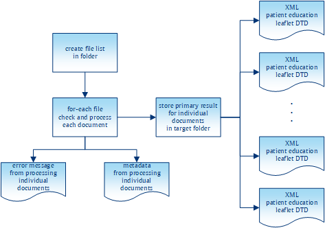
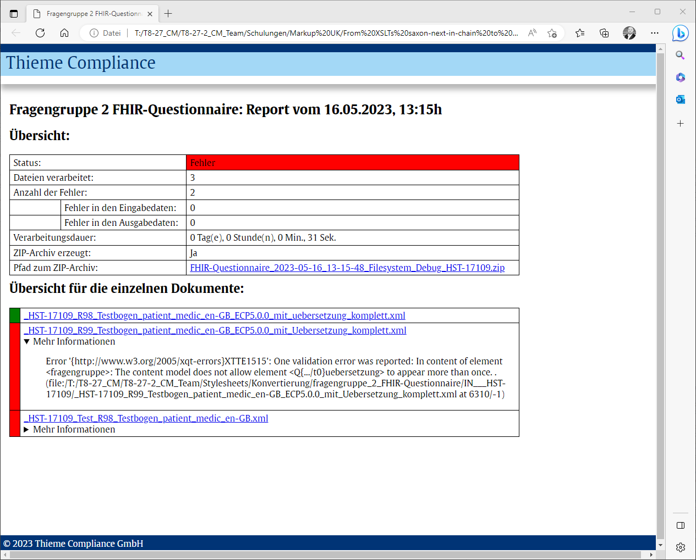

Having discussed the original batches and the requirements for the new system, we can now move on to the new pipeline system using XProc 3.0. If we take another look at Figure 3, “Batch “fragengruppe_2_evidence”” and Figure 4, “Batch “fragengruppe_2_FHIR-Questionnaire””, it is easy to see that the first one is a good deal more complex than the second one. Our coverage will therefore concentrate primarily on the pipeline replacing the first batch since the basic concepts and strategies for developing the two pipelines are fundamentally the same. The difference between the two pipelines is discussed further below.
The general approach in our move to XProc 3.0 was to replace the double control flow of the original solution with a single control flow in a pipeline. As Figure 3, “Batch “fragengruppe_2_evidence”” shows, the original batch incorporated twelve sub-batches, one for each parameter group. Inside each of these batches, an XSLT stylesheet was called to collect and process all documents in the input folder with the given parameters. As we wanted to eliminate as much batch scripting as possible, the first or outer control flow had to be replaced by an XProc 3.0 pipeline. Given the new requirements, we had to remove the inner, XSLT-based control flow as well, thus giving us one iteration over all documents in the input folder instead of twelve iterations (and potentially more in the future).
The basic reason for this was the new requirement to check the picture references: A document in the input folder should only be processed if all references to pictures in the document are valid, i.e. point to an existing file. As this is a property of an input document, it makes sense to address this once and for all, and hence start the twelve XSLT transformations only after all picture references have been checked.
Doing away with batch scripting also necessitates two other additions to the pipeline: As we no longer call XSLT via Saxon's command line, we can no longer use its powerful command line interface to perform an XInclude and to validate the source documents. As XProc 3.0 has the steps <p:xinclude> and <p:validate-with-xml-schema>, these two tasks can be easily performed before the stylesheet transformations begin.
The well-established and tested XSLT stylesheets are of course reused in the pipeline. However, this first stylesheet is not called from a batch anymore but via the <p:xslt> step instead. Additionally, the XProc pipeline uses a different entry point to the stylesheet than the batch: The latter called a named template that creates a collection of documents in a given folder matching a given pattern of file names. For each document in this collection, a template is then called by matching its root element.
The XProc 3.0 pipeline calls the same template by matching the document's root element, but creates the sequence of the documents to be processed itself: XProc's <p:directory-list> produces a document reflecting the content of a given directory, possibly using include and exclude filters. The pipeline then iterates over each <c:file> element to subject the respective document to processing.
Figure 5. A bird's eye view of the new system
|  |
The second change to the existing XSLT stylesheet is to unroll the @saxon:next-in-chain concatenation of stylesheets to a sequence of explicit calls of <p:xslt>. In Saxon, you can use @saxon:next-in-chain inside a <xsl:output> to direct the stylesheet's output to another stylesheet. This is a convenient way to chain stylesheets and thus decompose complex processing into a set of smaller stylesheets. This approach helps to improve the quality of code by breaking down a complex task into smaller pieces that are easier to manage. The downside is that @saxon:next-in-chain is a Saxon-only extension attribute, which is not supported by other processors and is not guaranteed to be a Saxon feature in the future. With the XPath 3.1 function fn:transform(), we have a way to chain stylesheet execution together in a standard-compliant manner. It would therefore be easy to rewrite the existing stylesheets to get rid of @saxon:next-in-chain and replace it with a cascade of fn:transform(). Hence, there is no need to change technology from XSLT to XProc if you are looking for a standard-compliant way to develop decomposed stylesheets and then chain them together to perform the general transformation.
In our case, using XProc 3.0 provides an additional advantage for developing decomposed stylesheets: With <p:store>, XProc 3.0 has a step for storing documents that can easily be used to improve debugging pipelines and and – in our case – decomposed stylesheets. Unlike in XProc 1.0, <p:store> is fully transparent, meaning that the document on the input port is stored and delivered on the output port. Therefore adding a <p:store> (almost) anywhere in your pipeline does not break the “normal” flow of documents, but provides great debugging opportunities. Switching off debugging is also pretty easy in XProc 3.0: The attribute @use-when associated with a Boolean expression can be used on (almost) any step in XProc. If the expression is evaluated as false, the step (and all its descendants) are effectively excluded from the pipeline. Therefore, by using <p:store use-when="expr" />, we can easily switch the generation of debugging information on and off. Since XProc 3.0 also introduced static options that could be used in XPath expressions, switching debugging on and off directly from the pipeline invocation in the command line is the way to go. To sum this point up: Unrolling @saxon:next-in-chain concatenation into an XProc pipeline helps to improve the quality of code by splitting larger tasks into smaller pieces.
What we have discussed so far might be considered a general blueprint for embedding complex XSLT stylesheets into an XProc pipeline. Running this pipeline is, apart from the improvements in debugging, largely equivalent to invoking the original stylesheet. Let us now have a look at the advancements added to the overall process with the XProc pipeline. As you can see in Figure 5, “A bird's eye view of the new system”, the general process can be described in three main parts:
Obtaining the URIs of the documents to be processed
Processing any individual documents and (possibly) storing the results to disk
Collecting the information from the individual processing to
Create the Zip archive
Generate a report about the processing
In the overall design, the <p:for-each> step has two purposes: (1) It processes every selected document, i.e. applying the XSLT stylesheets and, if the processing was successful, storing the produced documents to disk. (2) It produces meta information about the document processing: For every processed source document, a report document is created. The latter contains success or error reports for each stage of the source document processing, references to the image files in the source document, and a list of URIs pointing to the created result documents. We will look at these report documents later. For now, let us focus on the first purpose of the block inside the <p:for-each> step.
When unrolling the @saxon:next-in-chain sequence from the original batch, we first get a sequence of two to six <p:xslt> steps, each followed by a <p:store> for debugging purposes. The first improvement to be added to the pipeline was the validation of the result document(s). Until then the quality of the result document(s) relied on the validity of the source document and the correctness of the XSLT stylesheet(s) to produce the result documents. One requirement for the XProc pipeline was to add a validation for the result document(s) and store only those documents that prove to be valid. As XProc 3.0 defines steps for validation with RELAX NG, XML Schema and Schematron (as well as NVDL and JSON schemas), this could be achieved quite easily. The result of the last XSLT transformation is connected to the input port of a validation step. If the validation is successful, i.e. the document is valid, it appears on the step's result port and can be stored. If the document proves to be invalid, the validation step raises an error, which is then caught to create an element for the report document.
For the “fragengruppe_2_FHIR-Questionnaire” the validation takes the form of an XML schema and a Schematron document. To validate the produced FHIR document, you simply chain a <p:validate-with-xml-schema> and <p:validate-with-schematron> after each other to obtain a complete validation of the document. For the other pipeline, called “fragengruppe_2_evidence” the resulting documents are in-house documents for which a DTD is the authoritative grammar. This poses some problems to XProc 3.0 since, as you might have established from the aforementioned list of supported validation languages, there is no step for DTD validation included. With <p:load>, however, pipeline authors can ask for a DTD validation of the document to be loaded. As with the “normal” validation steps, this either returns a valid document or an error is thrown. Unlike with the normal validation steps, however, the document to be validated does not appear on the input port but has to be loaded from a secondary store via URI. To circumvent this restriction, we switched the steps around: Instead of validating the (in-memory) document first and then storing if the validation succeeds, we first store the document and then validate it via reloading. As a consequence, invalid artifacts are written to disk, which does not occur in the other pipelines where we can validate before the document is stored. This was a deliberate decision, because it would be easy to delete the stored document from disk once we have discovered its invalidity.
Another aspect of the quality improvements for the produced results is related to image referencing. Along with the source XML documents, the source folder also contains image files. Some of the image files are referenced in the documents, but not all. On the other hand, documents might have a reference to a non-existing image file. To improve the overall quality of the results, the XProc pipeline was required to check the source documents for image references and to raise an error if an image file is referenced that is not present in the source folder. In addition, the pipeline has to keep track of the referenced image files, so that only referenced images are included in the resulting Zip archive.
With XProc 3.0, both requirements are pretty easy to fulfill: The pipeline iterates over all image references in the selected source documents and obtains their URI. With the <p:file-info> step, you can then obtain information about the referenced image: If the referenced resource exists, a <c:file> document appears on the result port. If the document does not exist, a <c:error> document will appear on this port. In the first case, an entry for the archive manifest is generated, In the second case, an error report element is created to flag the error for the report to be generated.
The outlined algorithm solves both shortcomings in the existing batch system: Since only images with a corresponding <c:entry> element are included in the Zip archive, the latter will only contain images actually referenced in at least one source document. And since every image reference in a source document is tested, the resulting report will include every error for invalid image references.
However, some post-processing of the image-related <c:entry> elements proved to be necessary: For efficiency reasons, the image references were tested for the source documents, but not for the produced documents. This is possible since the XSLT transformations do not add any image references. In general, there will be a 1:m relationship between the source documents and resulting documents, but since the produced documents are validated, there may be a 1:0 relationship if the validation for all produced documents fails. In this special case, there might be a <c:entry> element for an image document that is not referenced by any resulting document. Before actually generating the Zip archive, some cleanup has to take place. Every entry for an image documents records the URI of the source document it was derived from as well as any resulting XML document. For every image-related <c:entry>, the cleanup has to check whether there is a corresponding <c:entry> from a produced document. If not, the image-related entry is simply deleted, meaning that the resulting archive will only contain images actually referenced in a contained XML document.
The last aspect of the new XProc pipeline system to mention here is the improvement of logging or reporting. One new feature of XProc 3.0 that very much supports this requirement is the addition of <p:catch> with specified error codes. In XProc 1.0, we just had a <p:try>/<p:catch> where every error raised in the <p:try> block had to be handled in a single <p:catch> block. The ability to write different <p:catch> blocks for specific errors results in a more readable pipeline. This is also facilitated by the definition of more fine-grained error conditions for each individual step in XProc 3.0. This makes it very easy to identify what exactly went wrong inside an XProc pipeline, and to react to or report on the exact problems that occurred.
Our pipeline makes extensive use of <p:try>/<p:catch> to improve reporting, which is an important requirement as stated above. If you have a look at Figure 5, “A bird's eye view of the new system” again, the pipeline does not only produce XML documents representing the transformation results (shown on the right side of the code block), but also reports about the pipeline process (failing out at the bottom of the code block). For (almost) every document found in the source directory, the pipeline produces a report document. Here is an excerpt of such a document:
<tcg:report file="reference-to-source-doc"> <tcg:report-done phase="validation"> <successfully-validated /> </tcg:report-done> <tcg:report-done phase="processFileRefs"> <c:entry name="name-of-zip-entry-for-pic1" href="path-to-pic1" found-in="reference-to-source-doc" /> </tcg:report-done> <tcg:report-done phase="2.5.1"> <c:entry name="name-of-zip-entry-for-doc1" href="path-to-doc1" derived-from="reference-to-source-doc" /> </tcg:report-done> <tcg:report-error phase="2.6.0"> <c:errors><!-- detailed error report here --></c:errors> </tcg:report-error> </tcg:report>
This snippet shows a processing report for a source document the URI of which is reported in the @file attribute. The document passes the source validation successfully, and it contains a valid reference to an image file. It is transformed in phase "2.5.1", thus producing a result stored at the recorded position. However, the transformation in phase "2.6.0" was not successful, as a result of which a <tcg:report-error> is included to flag the error and to report corresponding details. The <c:entry> elements are used to create the Zip archive. The attributes @found-in and @derived-from are used to make sure that an image file is included in the archive only if the source document containing the image references also passes transformation.
Based on the collected processing reports, the last two tasks of the pipeline are performed: creating the Zip archive and then creating the final report. Creating the archive is pretty straightforward. XProc 3.0's <p:archive> step has an input port manifest. The expected document has a <c:manifest> root element with <c:entry> elements denoting the expected archive entries. As we already created <c:entry> elements in our document reports, we just need to extract those elements from the report, wrap it in the expected element root and then call <p:archive> to create the Zip archive.
The final report is also based on the collected report elements: The reports contains information about every single processed XML document in the source folder, to which we add aggregated data such as the number of processed files, the number of detected errors or the complete processing duration. Finally, this report is processed with an XSLT stylesheet to create an HTML document and thus provide the improved logs requested in the initial requirements.
Figure 6. Summarised HTML log
|  |
As stated above, since the two batches were similar in their basic concepts, the two pipelines will also resemble each other. There are two basic differences to the pipeline already discussed:
While the first pipeline is only a cascade of two XSLT stylesheet, the FHIR has a total of five XSLTs. The implementation is pretty straightforward as the result of the first <p:xslt> step serves as the input for the next one. As a consequence, instead of two consecutive calls to <p:xslt>, we have a sequence of five interconnected calls in the FHIR pipeline.
The second, more conceptual difference is the way that the pipeline results are validated. While the pipeline discussed above uses a DTD validation, FHIR documents employ a different concept. The standard defines an XML schema and a Schematron schema to validate the documents. As both of these validation technologies are supported in XProc 3.0 by individual steps, incorporating FHIR validation simply requires a pair of <p:validate-with-xml-schema> and <p:validate-with-schematron> with the produced document on the default input port.